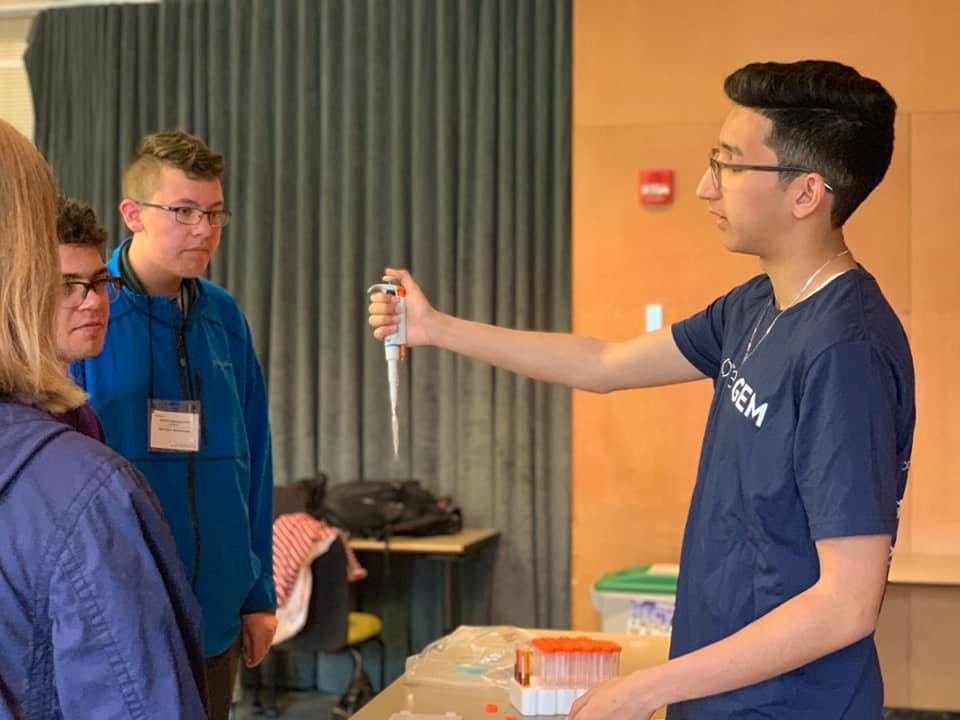
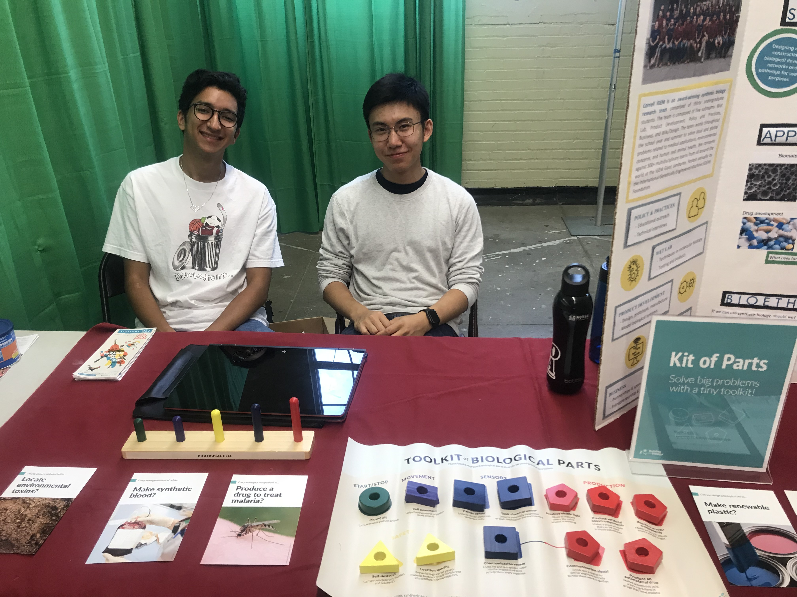

Engaging with the public and learning from the community is just as important as learning about a topic through scientific literature. Through engaging with various community leaders and organizations, we learned about how we can use synthetic biology to solve local problems here in Ithaca, New York. We participated in various campus events, workshops, and community outreach initiatives with the goal of encouraging discussions and spreading awareness of the applications of synthetic biology in people’s everyday lives.
- Interactive activities, such as pipetting and interacting with mock gels, helped us to engage younger students in learning complex processes, such as gel electrophoresis.
- Events such as 4-H and Splash! continued to inspire us with the excitement of the youth for synthetic biology and its applications in their lives.
- Novel methods of detection are being created and researched every day. Through the Aptagen Seminar talk, we were able to provide an opportunity not only for the Cornell community to learn more about one avenue of synthetic biology but also for ourselves to learn more about the possible applications of aptamers, a key component of our 2019 project.
As part of the volunteer activity with YOURS, we prepared two experiments to spark the scientific interest of elementary school students. One was the classic Mentos and Coke experiment, and the other was making homemade ice cream. The children were very energetic and enthusiastic about the activities. For the Mentos experiment, they were eager to drop the Mentos into the Coke bottle to set off the reaction. During the ice-cream-making process, the children worked through each step on their own with some guidance from our team members. We explained why the experiments worked, such as how the outer surface of the Mentos caused the carbonated soda to explode out of the bottle. This experience allowed us to teach the students about some of the neat ways in which science works around us.

Aptagen is a synthetic biology company that specializes in detection methods using aptamers. On April 11th, Cornell iGEM collaborated with the Biomedical Engineering Society to host Dr. G. Thomas Caltagirone, President and CEO of Aptagen, for a public seminar talk on the use of aptamers in cutting-edge technology. Aptamers are short DNA and RNA molecules that can selectively bind to small molecules such as peptides, proteins, biomarkers, cells, and tissues. Once an aptamer has bound to a target molecule, labels such as fluorescent tags, enzymes, or reporters allow for the detection of the target molecule. Some of the advantages of using aptamers over antibodies, which are used in ELISAs, include lower manufacturing costs and detection time. During his talk, Dr. Caltagirone introduced us to some of the defining technologies developed by Aptagen, such as the Aptabecon, a novel idea that eliminates the need for an assay to detect the fluorescence produced by an aptamer. We were pleased to be able to share this experience with other members of the Cornell community, and we learned a lot about the neat applications of aptamers in synthetic biology. Through this event, our team gained some additional inspiration for our 2019 project, which uses an RNA aptamer to detect the presence of microcystins in lakewater samples.
Medium Design Collective hosted the fifth annual Raw Expo event at Cornell University in late April. Cornell iGEM participated in the event by showcasing our past projects and preparing an interactive activity for event-goers. The event’s theme explored the incorporation of sensory observations and exchanges in the work produced by each group and how each project is interconnected with others and the world around us. Our team was able to explain the various ways we connect with, learn from, and give back to the community through our public outreach initiatives and integrated human practices component of each project. During our conversations, we also addressed any misconceptions of synthetic biology that people may have had and helped them to understand the steps involved in the iGEM process.

Splash! is an annual event at Cornell University where middle school and high school students can sign up to attend different workshops taught by Cornell groups and organizations. This year, our team hosted a workshop to teach the students about synthetic biology. There were three stations: strawberry DNA extraction, gel electrophoresis, and bioethics. During the one-hour session, three groups of students would take turns at each station. Before starting, we would explain what synthetic biology is and how it differs from genetic engineering. The DNA extraction and gel electrophoresis stations provided opportunities for students to get hands-on experience extracting DNA from store-bought strawberries and learning to pipette small amounts of liquid using a micropipette. Each station included a mini-lecture to teach students about the science behind each activity. At the bioethics station, the three case studies we prepared addressed central issues in synthetic biology, and students had a chance to consider various directions of technological advancement and to debate amongst themselves. Splash! provided us with a great opportunity to connect with students and to share with them our passion for synthetic biology.

4-H Careers Exploration is an annual event hosted on Cornell’s campus that provides middle school students
with an opportunity to explore various fields and careers. Cornell iGEM participated in this event by
hosting six University U sessions in late June. Together with the students, we explored the foundational
concepts of DNA extraction, gel electrophoresis, and bioethics through three stations with hands-on
activities and small-group discussions to encourage participation and dialogue.
At the DNA extraction station, each student was given a strawberry to pulverize for extracting its DNA. Our
team members explained the purpose of each step of the process working towards the extraction of strawberry
DNA, so the kids were able to understand why they were adding dish soap and isopropyl alcohol to the
strawberry liquid. From this point, we drew parallels between the protocols used in wet lab work to the
extraction they just accomplished with everyday household materials.

Our team traveled to the New York State Fair at Syracuse on September 2nd to host an educational booth as part of the 4H organization. We designed fun activities to inspire children about the possibilities of genetic engineering. We prepared an educational kit where kids could design cells to make synthetic blood or even cure cancer. Many children who came were genuinely interested in science but lacked information about synthetic biology. By allowing the kids to design their own cells, they became the scientists while we were merely the helpers. Many children showed great interest in the designing process and expressed intrigue in becoming a scientist and actually designing the cells in the lab. Through this experience, we were able to introduce synthetic biology and spark curiosity about science.
On September 26th, Cornell iGEM was invited to host a discussion about synthetic biology in an event
organized by Cornell Alliance for Science, which is an organization interested in promoting scientific
innovation for food security and environmental sustainability. We started by briefly introducing our team
and our past projects on synthetic biology. Although the majority of the members were not familiar with
synthetic biology, they were deeply interested in the definition of synthetic biology and its difference
from genetic engineering. Many of them shared their opinion on the development of synthetic biology and the
ethical concerns they have about manipulating biological systems.
Afterwards, we introduced three case scenarios to them. The scenarios were hypothetical situations that
explored the impact of advances in synthetic biology on various aspects of society. The group discussed how
we should cope with these issues in real life instead of trying to decide who is right or wrong. Some group
members were legal experts, and they shared their assessment of conflicting situations based on current
legislation. One of the case scenarios dealt with the property dispute over genetically modified crops
between the farmers and companies that developed the crops. Many individuals brought up the current
legislation on GMOs and discussed the importance of assigning ownership in the contract.
Overall, the members of Alliance for Science were interested in learning about the potential of synthetic
biology and wanted to know more about our projects. Through the discussion with Cornell Alliance for
Science, our team was able to connect with people interested in synthetic biology and encourage them to
consider the bioethics of applying the technology to society.
To engage with the general public through social media, we decided to publish weekly Member Spotlights to highlight the diversity within our members in both their professional and personal interests. Despite ranging in majors from Biological Sciences to Computer Science, we were all tied together by our shared interest in synthetic biology and its applications. In addition to promoting our members, the Member Spotlights were used to publicize a variety of events that our group hosted, such as the Aptagen Seminar Talk, and to recap events, such as the 4-H Careers Exploration event, to share our multi-faceted approach to connecting with the community.
We have been working on a knowledge collaboration with two highschool students, Darlsy and Kim. Darlsy wanted to make a booklet that can be distributed in Africa to spread awareness of biotechnology. We have helped her collect sources for the booklet, and currently are helping her design the layout of the booklet. Kim is working on a project to extract AB15, the gene responsible for producing abscisic acid, a plant hormone responsible for allowing increased stomatal conductivity in extreme survival conditions. Her project involves genetically engineering crops with the AB15 gene to become drought tolerant, and we have been helping her with the DNA extraction process. Because she was unfamiliar with the process of isolating DNA, we tried to explain wet lab techniques used in DNA extraction. We introduced CRISPR-Cas9 and homologous recombination. Due to limited access to the restriction enzymes used in CRISPR, we recommended that she use homologous recombination instead. Kim is currently working on the DNA isolation process, and we are consulted whenever she encounters technical problems. Through the two collaborations, we have provided resources and practical guidance for students working on projects in synthetic biology.